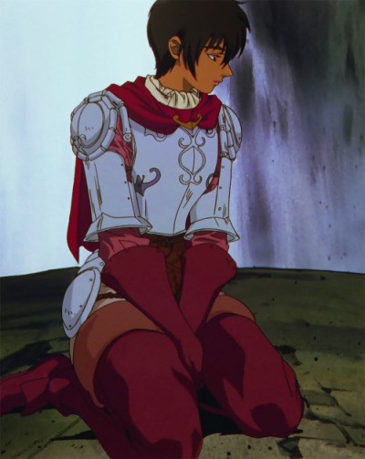
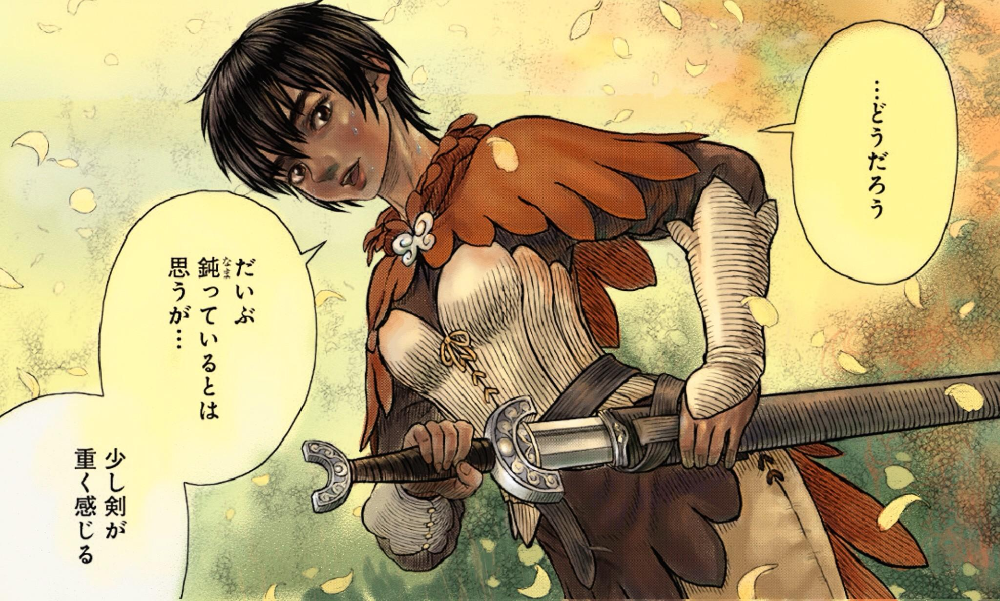

Casca was the only female member in the original Band of the Hawk and is behind only Griffith and Guts in swordsmanship. Her ambivalent relationship to both of them makes her moody and capricious. Casca joins the Hawks after Griffith empowers her to save herself from a sexual assault by a nobleman who bought her from her parents, Casca having since harbors feelings towards Griffith which most of their comrades are aware of.  While Casca was against Guts joining the Hawks, her hostility towards him gradually waned as she came to accept him as a comrade for saving her life multiple times while developing feelings for him. When Guts is preparing to leave the band, Casca attempts in convincing him to stay to no avail. After Griffith is imprisoned, Casca becomes the leader of the Band of the Hawk as they are forced to go into hiding after branded outlaws by Midland. After Guts returns to aid them when they are under attack, Casca falsely blames Guts for Griffith's capture and then laments her perceived failures as a leader before attempting suicide. Guts saves her yet again and the two finally consummate their mutual feelings for one another, embarking on a rescue mission to recover Griffith the following day.
The rescue of Griffith is successful, but his broken spirit leads to his choice to sacrifice Hawks during the Eclipse with Casca forced to watch their comrades being slaughtered before being violated by Griffith after his rebirth as Femto. The ordeal emotionally scarred Casca as her mind broke and mentally regressed while losing all her memories as way of protecting herself from the trauma. In addition to being branded with a sacrificial mark on her breast and thus becoming a target for fell creatures on a nightly basis, Casca prematurely gives birth to her child with Guts after it has been corrupted from Griffith's rape. Casca was entrusted in Godo's care before she wandered off to St. Albion and was saved by Guts, who attempts to protect her on his own despite the more dangerous spirits that their brands together attract. Guts's attempt to protect her ultimately had him lose Casca's trust when he attacked her while under the influence of his inner darkness.
"When a man aspires to greatness, he must also bear a great burden."
Casca
As Casca travels, completely oblivious to her surroundings, Guts and company keep a close watch over her. She has put herself in grave danger many times but Guts' group has yet to fail to come to her rescue and protect her. She seems to slowly be warming up to Guts again even coming to his side when he is unconscious to watch him. Casca's well-being is the driving force for Guts to keep himself from reverting to a revenge-obsessed wanderer. While outside Vritanis, the Skull Knight revealed that her mental state may be cured by the Elvish queen Hanafuku while cryptically warning Guts that "What [Casca] wishes for may not be what [Guts] wish[es] for". When Farnese and Schierke enter the world within Casca's mind as part of Hanafuku's ritual once they reach Elfhelm, the two realize that Casca did not want her mind restored as it would mean dealing with the pain from her ordeal in the Eclipse. But the two restore Casca anyway with Farnese promising to help her cope with her pain.
